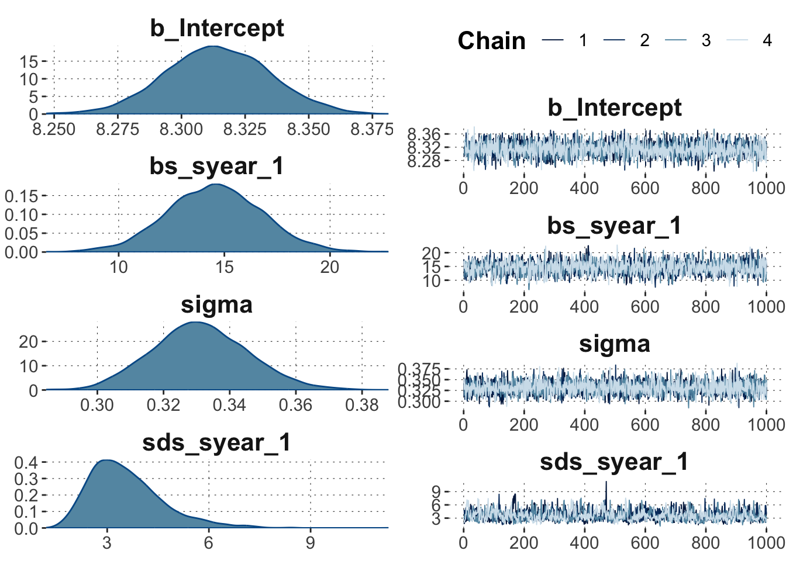
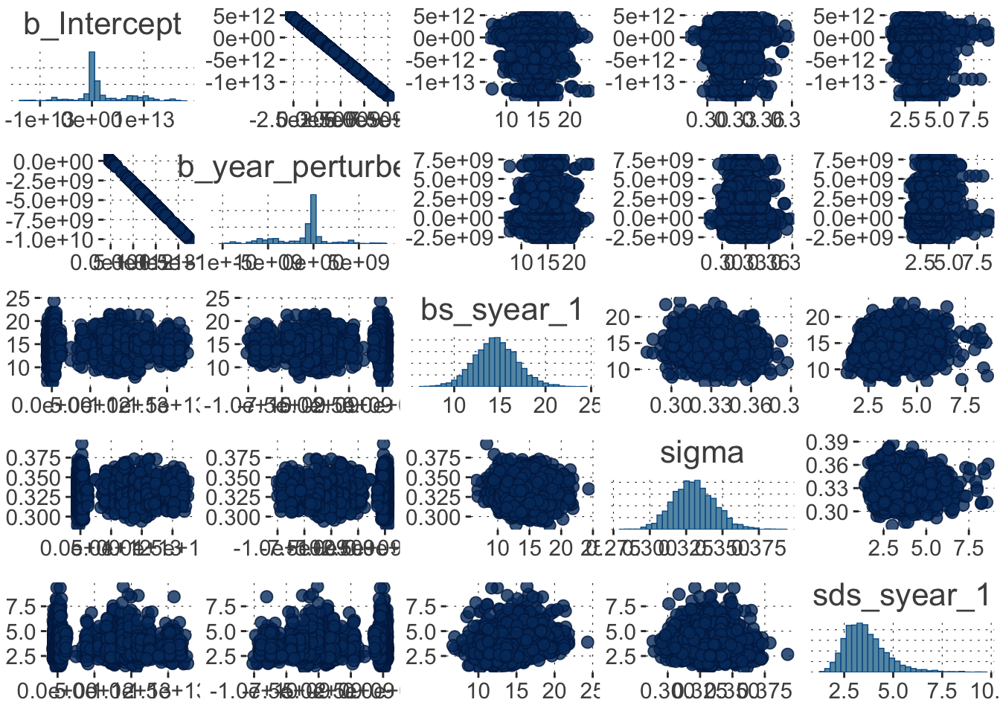
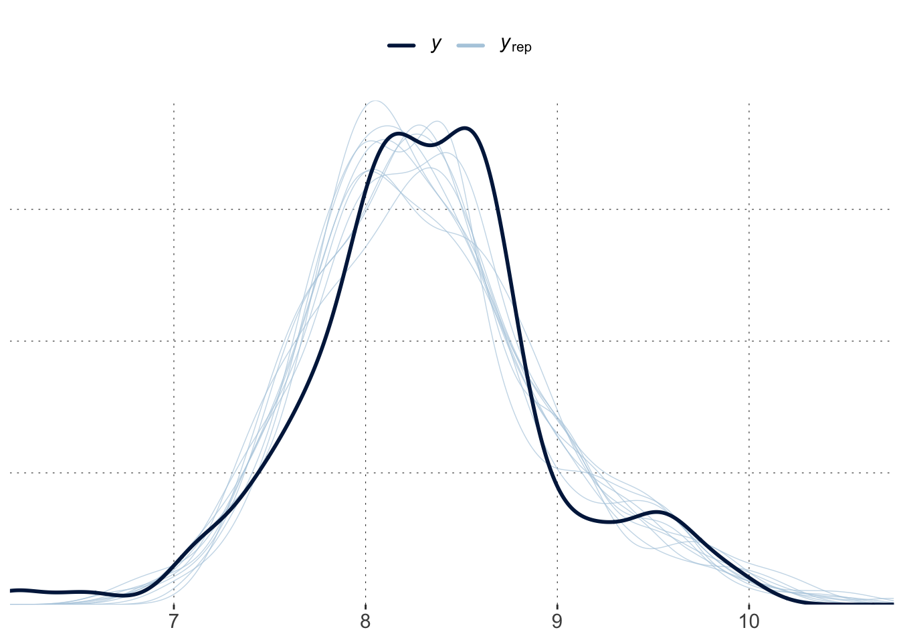
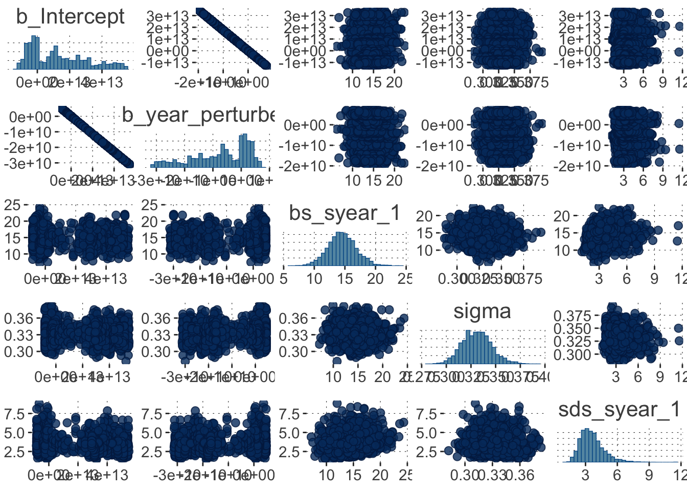
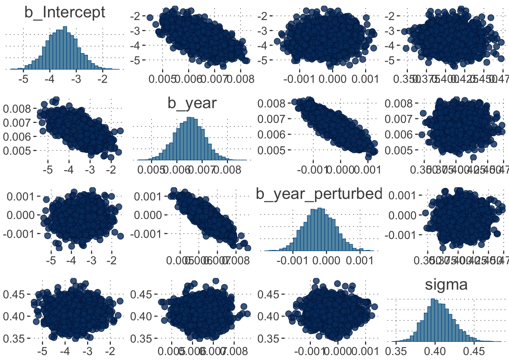
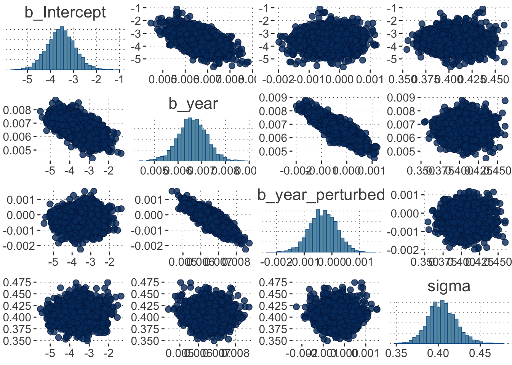

Here is code to load (and if necessary, install) required packages, and to set some global options (for plotting and efficient fitting of Bayesian models).
Toggle code
# install packages from CRAN (unless installed)pckgs_needed <-c("tidyverse","brms","rstan","rstanarm","remotes","tidybayes","bridgesampling","shinystan","mgcv")pckgs_installed <-installed.packages()[,"Package"]pckgs_2_install <- pckgs_needed[!(pckgs_needed %in% pckgs_installed)]if(length(pckgs_2_install)) {install.packages(pckgs_2_install)} # install additional packages from GitHub (unless installed)if (!"aida"%in% pckgs_installed) { remotes::install_github("michael-franke/aida-package")}if (!"faintr"%in% pckgs_installed) { remotes::install_github("michael-franke/faintr")}if (!"cspplot"%in% pckgs_installed) { remotes::install_github("CogSciPrag/cspplot")}# load the required packagesx <-lapply(pckgs_needed, library, character.only =TRUE)library(aida)library(faintr)library(cspplot)# these options help Stan run fasteroptions(mc.cores = parallel::detectCores())# use the CSP-theme for plottingtheme_set(theme_csp())# global color scheme from CSPproject_colors = cspplot::list_colors() |>pull(hex)# names(project_colors) <- cspplot::list_colors() |> pull(name)# setting theme colors globallyscale_colour_discrete <-function(...) {scale_colour_manual(..., values = project_colors)}scale_fill_discrete <-function(...) {scale_fill_manual(..., values = project_colors)}
This tutorial provides demonstrations of how to check the quality of MCMC samples obtained from brms model fits.
A good model
To have something to go on, here are two model fits, one of this is good, the other is … total crap. The first model fits a smooth line to the average world temperature. (We need to set the seed here to have reproducible results.)
Toggle code
fit_good <-brm(formula = avg_temp ~s(year), data = aida::data_WorldTemp,seed =1969)
Here is a quick visualization of the model’s posterior prediction:
Toggle code
conditional_effects(fit_good)
The good model is rather well behaved. Here is a generic plot of its posterior fits and traceplots:
Toggle code
plot(fit_good)

Traceplots look like hairy caterpillar madly-in-love with each other. The world is good.
We can check \(\hat{R}\) and effective sample sizes also in the summary of the model:
Toggle code
summary(fit_good)
Family: gaussian
Links: mu = identity; sigma = identity
Formula: avg_temp ~ s(year)
Data: aida::data_WorldTemp (Number of observations: 269)
Draws: 4 chains, each with iter = 2000; warmup = 1000; thin = 1;
total post-warmup draws = 4000
Smooth Terms:
Estimate Est.Error l-95% CI u-95% CI Rhat Bulk_ESS Tail_ESS
sds(syear_1) 3.56 1.08 1.96 6.17 1.00 907 1689
Population-Level Effects:
Estimate Est.Error l-95% CI u-95% CI Rhat Bulk_ESS Tail_ESS
Intercept 8.31 0.02 8.27 8.35 1.00 3732 2652
syear_1 14.55 2.25 10.11 19.08 1.00 2182 2371
Family Specific Parameters:
Estimate Est.Error l-95% CI u-95% CI Rhat Bulk_ESS Tail_ESS
sigma 0.33 0.01 0.30 0.36 1.00 3823 2962
Draws were sampled using sampling(NUTS). For each parameter, Bulk_ESS
and Tail_ESS are effective sample size measures, and Rhat is the potential
scale reduction factor on split chains (at convergence, Rhat = 1).
Importantly, the summary of the model contains a warning message about one divergent transition. We are recommended to check the pairs() plot, so here goes:
Toggle code
pairs(fit_good)
This is actually not too bad. (Wait until you see a terrible case below!)
We can try to fix this problem with a single divergent transition by doing as recommended by the warning message, namely increasing the adapt_delta parameter in the control structure:
Family: gaussian
Links: mu = identity; sigma = identity
Formula: avg_temp ~ s(year)
Data: aida::data_WorldTemp (Number of observations: 269)
Draws: 4 chains, each with iter = 2000; warmup = 1000; thin = 1;
total post-warmup draws = 4000
Smooth Terms:
Estimate Est.Error l-95% CI u-95% CI Rhat Bulk_ESS Tail_ESS
sds(syear_1) 3.59 1.09 1.97 6.30 1.00 1003 1613
Population-Level Effects:
Estimate Est.Error l-95% CI u-95% CI Rhat Bulk_ESS Tail_ESS
Intercept 8.31 0.02 8.27 8.35 1.00 3632 2619
syear_1 14.59 2.40 9.96 19.34 1.00 2425 2510
Family Specific Parameters:
Estimate Est.Error l-95% CI u-95% CI Rhat Bulk_ESS Tail_ESS
sigma 0.33 0.01 0.30 0.36 1.00 3588 2868
Draws were sampled using sampling(NUTS). For each parameter, Bulk_ESS
and Tail_ESS are effective sample size measures, and Rhat is the potential
scale reduction factor on split chains (at convergence, Rhat = 1).
That looks better, but what did we just do? — When the sampler “warms up”, it tries to find good parameter values for the case at hand. The adapt_delta parameter is the minimum amount of accepted proposals (where to jump next) before “warm up” counts as done and successfull. So with a small problem like this, just making the adaptation more ambitious may have have solved the problem. It has also, however, made the sampling slower, less efficient.
A powerful interactive tool for exploring a fitted model (diagnostics and more) is shinystan:
Toggle code
shinystan::launch_shinystan(fit_good_adapt)
A terrible model
The main (maybe only) reason for serious problems with the NUTS sampling is this: sampling issues arise for bad models. So, let’s come up with a really stupid model.
Here’s a model that is like the previous but adds a second predictor., This second predictor is intended to be a normal (non-smoothed) regression coefficient that is almost identical to the original year information. You may already intuit that this cannot possibly be a good idea; the model is notionally deficient. So, we expect nightmares during sampling:
This model is deliberately set up to be stupid (and to mislead you). If you don’t like being held in the dark, try to find the mistake already.
Solution
See below.
Toggle code
summary(fit_bad)
Family: gaussian
Links: mu = identity; sigma = identity
Formula: avg_temp ~ s(year) + year_perturbed
Data: mutate(aida::data_WorldTemp, year_perturbed = rnor (Number of observations: 269)
Draws: 4 chains, each with iter = 2000; warmup = 1000; thin = 1;
total post-warmup draws = 4000
Smooth Terms:
Estimate Est.Error l-95% CI u-95% CI Rhat Bulk_ESS Tail_ESS
sds(syear_1) 3.65 1.11 1.97 6.38 1.00 1067 1854
Population-Level Effects:
Estimate Est.Error l-95% CI
Intercept 813082130153.69 3284571863257.26 -2431631235980.50
year_perturbed -464618013.37 1876896806.96 -5284897132.79
syear_1 14.55 2.31 10.19
u-95% CI Rhat Bulk_ESS Tail_ESS
Intercept 9248576884050.78 1.72 6 26
year_perturbed 1389502526.52 1.72 6 26
syear_1 19.06 1.00 2464 2447
Family Specific Parameters:
Estimate Est.Error l-95% CI u-95% CI Rhat Bulk_ESS Tail_ESS
sigma 0.33 0.01 0.30 0.36 1.00 3458 2602
Draws were sampled using sampling(NUTS). For each parameter, Bulk_ESS
and Tail_ESS are effective sample size measures, and Rhat is the potential
scale reduction factor on split chains (at convergence, Rhat = 1).
Indeed, that looks pretty bad. We managed to score badly on all major accounts:
large \(\hat{R}\)
extremely poor efficient sample size
ridiculously far ranging posterior estimates for the main model components
tons of divergent transitions
maximum treedepth reached more often than hipster touches their phone in a week
Some of these caterpillars look like they are in a vicious rose war:
Toggle code
plot(fit_bad)

We also see that that the intercept of and the slope for year_perturbed are the main troublemakers (in terms of traceplots).
Interestingly, a simple posterior check doesn’t look too bad:
Toggle code
pp_check(fit_bad)

This shows that the warning messages (from Stan) shoult be taken seriously. The samples cannot be trusted, even if a posterior predictive check looks agreeable.
Exercise 1
Extract information about \(\hat{R}\) and the ratio of efficient samples with functions brms::rhat and brms::neff_ratio.
Interpret what you see: why are these numbers not good.
These numbers are also poor, because we would like them, ideally, to be 1. However, low efficiency of samples is not necessary a sign that the fit cannot be trusted, just that the sampler has a hard time beating autocorrelation.
Have a look at the pairs() plot:
Toggle code
pairs(fit_bad)

Aha, there we see a clear problem! The joint posterior for the intercept and the slope for year_perturbed looks like a line. This means that these parameters could in principle do the same “job”.
This suggests a possible solution strategy. The model is too unconstrained. It can allow these two parameters meander to wherever they want (or so it seems). We could therefore try honing them in by specifying priors, like so:
Family: gaussian
Links: mu = identity; sigma = identity
Formula: avg_temp ~ s(year) + year_perturbed
Data: mutate(aida::data_WorldTemp, year_perturbed = rnor (Number of observations: 269)
Draws: 4 chains, each with iter = 2000; warmup = 1000; thin = 1;
total post-warmup draws = 4000
Smooth Terms:
Estimate Est.Error l-95% CI u-95% CI Rhat Bulk_ESS Tail_ESS
sds(syear_1) 3.60 1.07 2.00 6.09 1.00 974 1893
Population-Level Effects:
Estimate Est.Error l-95% CI u-95% CI Rhat Bulk_ESS Tail_ESS
Intercept -11835.41 216661.87 -281701.29 139701.86 1.00 909 332
year_perturbed 6.77 123.81 -79.82 160.98 1.00 909 332
syear_1 14.68 2.26 10.30 19.27 1.00 2335 2467
Family Specific Parameters:
Estimate Est.Error l-95% CI u-95% CI Rhat Bulk_ESS Tail_ESS
sigma 0.33 0.01 0.30 0.36 1.00 3066 2557
Draws were sampled using sampling(NUTS). For each parameter, Bulk_ESS
and Tail_ESS are effective sample size measures, and Rhat is the potential
scale reduction factor on split chains (at convergence, Rhat = 1).
Well, alright! That isn’t too bad anymore. But it is still clear from the posterior pairs plot that this model has two parameters that steal each other’s show. The model remains a bad model … for our data.
Toggle code
pairs(fit_bad)

Here’s what’s wrong: year_perturbed is a constant! The model is a crappy model of the data, because the data is not what we thought it would be. Check it out:
That’s more like what we thought it was: year_perturbed is supposed to be noisy version of the actual year. So, let’s try again, leaving out the smoothing, just for some more chaos-loving fun:
Toggle code
fit_bad_2 <-brm(formula = avg_temp ~ year + year_perturbed, data = data_WorldTemp_perturbed,seed =1969,prior =prior("student_t(1,0,5)", coef ="year_perturbed")) summary(fit_bad_2)
Family: gaussian
Links: mu = identity; sigma = identity
Formula: avg_temp ~ year + year_perturbed
Data: data_WorldTemp_perturbed (Number of observations: 269)
Draws: 4 chains, each with iter = 2000; warmup = 1000; thin = 1;
total post-warmup draws = 4000
Population-Level Effects:
Estimate Est.Error l-95% CI u-95% CI Rhat Bulk_ESS Tail_ESS
Intercept -3.54 0.61 -4.73 -2.31 1.00 3842 2611
year 0.01 0.00 0.01 0.01 1.00 3641 2396
year_perturbed -0.00 0.00 -0.00 0.00 1.00 3722 2448
Family Specific Parameters:
Estimate Est.Error l-95% CI u-95% CI Rhat Bulk_ESS Tail_ESS
sigma 0.40 0.02 0.37 0.44 1.00 1671 1622
Draws were sampled using sampling(NUTS). For each parameter, Bulk_ESS
and Tail_ESS are effective sample size measures, and Rhat is the potential
scale reduction factor on split chains (at convergence, Rhat = 1).
There are no warnings, so this model must be good, right? – No!
If we check the pairs plot, we see that we now have introduced a fair correlation between the two predictor variables.
Toggle code
pairs(fit_bad_2)

We should just not have year_perturbed; it’s nonsense, and it shows in the diagnostics.